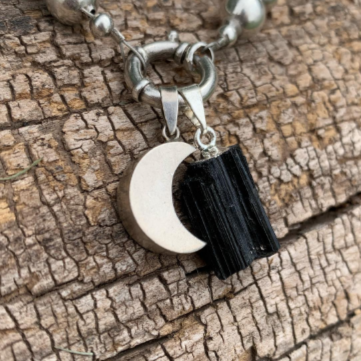

Productos:


- 
Si hablamos de la cornalina, tenemos que tener en cuenta tres propiedades energéticas centrales: equilibrio emocional 🧘ğŸ½â€â™€ï¸ motivación💪🻠y creatividad 🨠Es una excelente piedra para aquellos que desean salir de su zona de confort 🛋 y es de mucha ayuda llevar una cornalina con nosotros en aquellos momentos en que necesitamos tranquilidad y gran inventiva para encontrar soluciones, como en exámenes 👨ğŸ¼â€ğŸ«ğŸ“š o situaciones en las que se nos pone a prueba 😥🙇ğŸ¼â€â™‚ï¸ esto se debe a su gran poder estabilizador y a su aporte de motivación, vitalidad y creatividad 💡🌈. 🔸En el aspecto psicológico, las cornalinas ayudan a disuadir el miedo a la muerte con su paralela aceptación al ciclo de la vida 🌀🚶ğŸ¼â€â™€ï¸Nos aporta la capacidad para eliminar pensamientos equÃvocos🙇ğŸ»â€â™€ï¸ durante la meditación🕉🧘ğŸ¿â€â™‚ï¸ y asÃ, desarrollar la concentración al máximo💆ğŸ½â€â™€ï¸ 🔸Por último, y en lo referente a las emociones, la cornalina hace que la envidia, la rabia y el resentimiento (hacia ti y hacia terceros) se acabe ya que tiene el poder de equilibrar nuestras emociones.
El cuarzo rosa es la piedra del amor incondicional💘 Nos enseña la verdadera esencia de amor; esta asociado fundamentalmente al chakra del 🫀 Funciona extrayendo suavemente las energÃas negativas reemplazándolas por vibraciones amorosas 🌈💜 Puede fortalecer todo tipo de vÃnculos como amistades 👩🏻‍🤝‍👨🏾 lazos familiares 👨‍👨‍👧‍👦y relaciones de pareja👩🏾‍❤️‍👩🏼👩🏻‍❤️‍💋‍👨🏼 Facilita el perdón y la autoaceptación. Esto se debe a que fomenta la energÃa del amor en todas sus formas, con los demás y con nosotros mismos 🙆🏾🪞Además de ayudarte a amar a otras personas, logras amarte y a encontrarte a ti mismo 🧚🏻‍♀️ Es el cristal ideal para alivianar las rupturas amorosas❤️‍🩹porque nos motiva a soltar el rencor y el enojo para adoptar una perspectiva desde el amor y la aceptación 🫂asà como ayuda a abrir los corazones cerrados que se niegan a amar nuevamente 💗
Es considerado un mineral muy poderoso, pues además de estar asociado a la buena suerte🤞🏻🍀y la fortuna 🔮 también representa la salud, esperanza, bienestar, armonÃa, prosperidad asà como se lo relaciona con los cambios y la renovación🧚🏻‍♀️🧿 ❇️Proporciona equilibrio entre la mente y el cuerpo, aportando estabilidad y calma emocional ❤️‍🩹 Se utiliza principalmente para proteger, desbloquear y sanar el chakra del corazón 🫀
Uno de nuestros cristales Ónix favoritos es el Ónix cielo 💠no solo por su notable belleza, sino también por sus fascinantes propiedades energéticas ✨ Es un cristal armonizante 🧘🏼‍♀️transmite gran calma y relajación 🕉 ayuda a estar en armonÃa con tu entorno y a aprender lecciones, impartiendo confianza en uno mismo🧚🏾‍♂️ ğŸ”¹Puede ser de mucha utilidad para aquellas personas que estén pasando por un momento de depresión o melancolÃa ya que ayuda a pensar objetivamenteğŸ’da valor y fuerza 💪🏻e infunde voluntad 🤸🏼‍♀️ Además, promueve vigor y perseverancia. En su poder vibratorio posee la capacidad de estabilizarnos, mitiga el terror a lo desconocido🌈 ✔️Podemos colocar un ónix engarzado colgando del cuello 📿 para que aflore en nosotros la paz, para eliminar los sentimientos de culpabilidad y prevenir cualquier tipo de enfermedad mental💆🏼‍♂️
Cuando llevamos un ónix con nosotros como una joya, sobre todo un ónix negro, son cruciales sus poderes de protecciónâš”ï¸ y autocontrol 💆🻠Al ónix se lo vincula con la fe, la confianza y el logro de metas y sueños😊 El ónix negro tiene una gran capacidad de protección 🛡ya que absorbe y transforma la energÃa negativa que esté dentro nuestro o que llegue a nosotros desde afuera, en forma de ataques de negatividad o malas vibras 🥴😵‍💫 Además, esta piedra preciosa es tu compañera en los desafÃos, metas o proyectos decisivos que tengas en tu vida 📈📊 Esto se debe a que promueve la confianza, el autocontrol y la toma prudente y objetiva de decisiones 🧠En su poder vibratorio posee la capacidad de estabilizarnos, eliminando miedos y potenciando la seguridad y la valentÃa.
La raÃz de Esmeralda nos ayuda con nuestro equilibrio mental. Es un cristal de inspiración, creatividad🨠e infinita paciencia 🧘🏼‍♀️ Potencia las habilidades psÃquicas 💆ğŸ»â€â™€ï¸ abre la clarividencia 👠y estimula la captación de sabidurÃa de los planos mentales 🧠Protegen a los viajantes🧳tanto por agua â›´ tierra 🚗 o aire🛫y también promueven nuestra salud interior. A esta piedra se le adjudica el poder de fortalecer la memoria y brindar elocuencia oratoria La raÃz de Esmeralda no es fácil de conseguir frecuentemente y por eso estamos tan contentos de haberla conseguido para ustedes!!🥰
🤍La selenita simboliza la pureza espiritual🧚🏻‍♀️ Se considera una piedra para la expansión de la consciencia 💡ayuda a calmar la mente🧘🏼‍♀️ ❕La selenita tiene una vibración muy fina, aporta claridad y lucidez mental 🌈estimula la actividad cerebral🧠y activa los centros de energÃa superiores, como el chakra de la corona 😇 Infunde paz profunda 🕊☮️y es excelente para la meditación o el trabajo espiritual🕉 En lo que respecta a lo psicológico, la selenita potencia el juicio y la comprensión 🧠En relación con el plano mental, limpia la confusión y dispersa y estabiliza las emociones â¤ï¸â€ğŸ©¹âœ¨
Esta piedra está relacionada Ãntimamente con la elevación espiritual 🧚🾠la meditación 🧘ğŸ¾â€â™‚ï¸y la protección energéticaâš”ï¸Además, une la lógica con la intuición❕Infunde un deseo de verdad y un impulso idealista, posibilitando que seas fiel a ti mismo y defiendas tus creencias 💪ğŸ»ğŸ«€Fomenta el pensamiento racional 💠la objetividad y la verdad… 💙Sodalita es una piedra fuerte para el chakra del tercer ojo 👠y el chakra de la garganta🗣Dentro del área del chakra del tercer ojo es donde se encuentra la glándula pineal y la sodalita es capaz de activar esta glándulaâœ´ï¸ ğŸŒˆğŸŒ€Esta piedra tiene una vibración que te ayuda a entender mejor la vida que estás viviendo, y cómo llegaste a estar en la situación en la que te encuentras🧞‍♂️🤸🏼‍♀️
🪄 La turmalina es un mineral de una composición sumamente compleja. Los colores que presenta son: negro, rosa, verde, rojo, entre otros. La más conocida de todas es la ▪️turmalina negra▪️ y es la gema por excelencia para absorber la negatividad no solo de las demás personas, si no también las del individuo que la posee 💁🏾‍♀️ Equilibra todos los chakras 🌈 Protege contra la polución electromagnética procedente de teléfonos móviles 📱 o computadoras 🖥 y mejora la concentración 🧠Es por eso que muchas personas eligen tener una turmalina en su ambiente de trabajo como el escritorio u oficina 🏢🗂 Sin dudas la turmalina es el la piedra por excelencia a la hora de protegernos contra la mala energÃa y por eso es aconsejable llevar una con nosotros en todo momento… ¿Vos ya tenés tu turmalina?